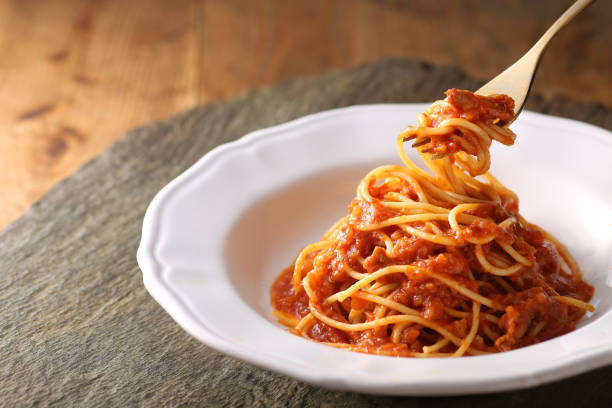

Introduction
Welcome to Pinoy Spaghetti Hub! This page is all about celebrating one of the most beloved Filipino comfort foods — Filipino-style spaghetti.
Here, you'll find simple cooking ideas, cultural insights, and delicious inspiration behind this sweet, savory, and iconic dish often served at birthdays and family gatherings.
Whether you're learning how to cook it for the first time or just exploring Filipino food culture, this space is made to guide and inspire you.
Inspiration
Pinoy Spaghetti Hub was inspired by the joy and memories that Filipino-style spaghetti brings to every celebration.
The sweet blend of tomato sauce and banana ketchup reflects the creativity of Filipino cooking.
This blog celebrates that tradition and the stories behind every plate.
It also highlights how food can connect people across generations and bring families closer together.
Table of Contents
- 🍝 Introduction
- 📖 Inspiration
- 📝 Recipe
- 👩🍳 Cooking Tips
- 🇵🇭 Culture

Contact: mdecastro5@student.ohlone.edu